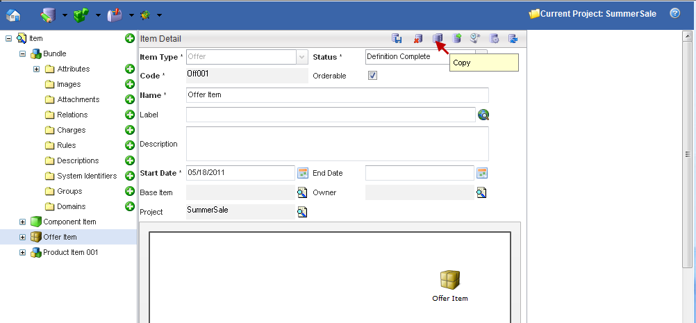
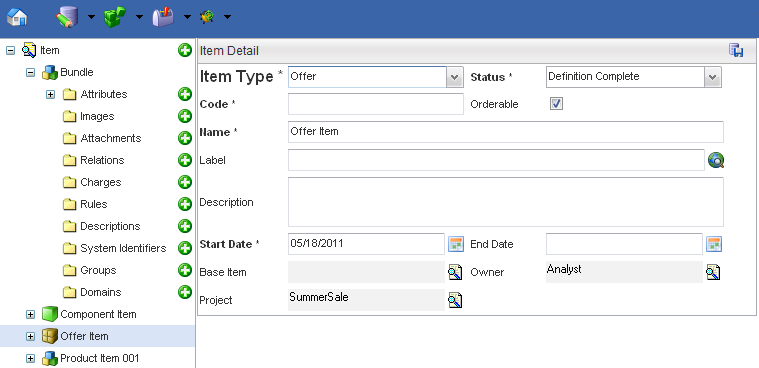

To copy an Item, click the Copy button.

| Action | Description |
|---|---|
| Add | Adds a new hierarchy node to the Catalog Hierarchy node. |
| Save | Saves the Items. |
When you click the Copy button, a copy of the Item is made and the fields are prepopulated with the item details with the exception of the Code field. This field remains empty as it has to be unique.

| Field | Description |
|---|---|
| Code | The Code uniquely identifies this item. |
| Item Type | Item Type either component, product, offer. It takes on the value of the copied item |
| Status | Status of the copied item is Definition. |
| Label | The label for the item, which is used in the application user interface. This field is a translational string that supports language translations (refer to Velocity Studio's Translation Element for more details). |
| Start Date | The effective date of this attribute. Refer to Start and End dates for details. |
| End Date | The end date of this attribute represents the date when this attribute is no longer effective. Refer to Start and End dates for details. |
| Base Item | Base item is the item extensions. |
| Orderable | If checked, the item can be ordered. The item will be returned during Catalog browsing. |
| Project | Each object is assigned to a Project. This defaults to the active or opened project when the Context is first created. |
| Menu | Description |
|---|---|
| Save | Saves any changes made to the Item record. |
| Copy | Use to copy an existing item. |
| Extend | Extends the selected Component. The extension is a new component with the selected object as the Base Component. |
| Change History | This displays the revision history of the item. |
| Show Usage | Displays usage finder for this Product, showing where this object is used. |